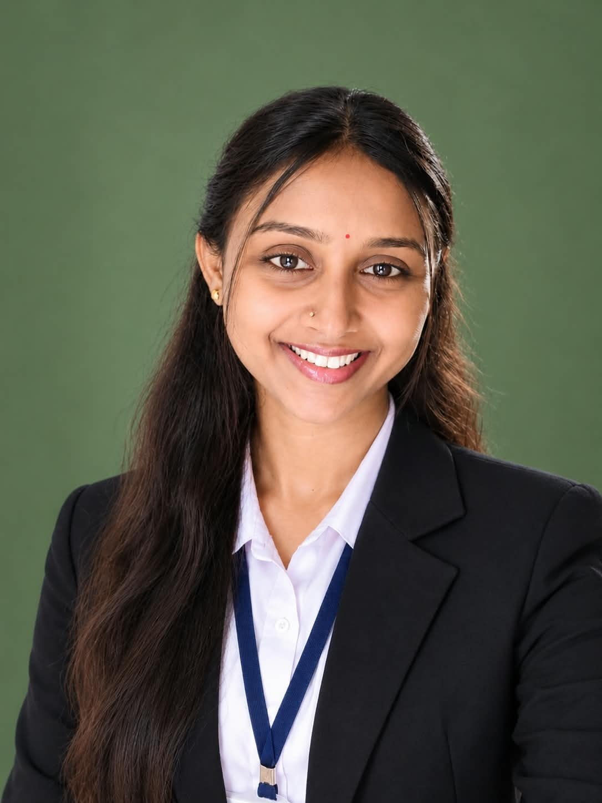
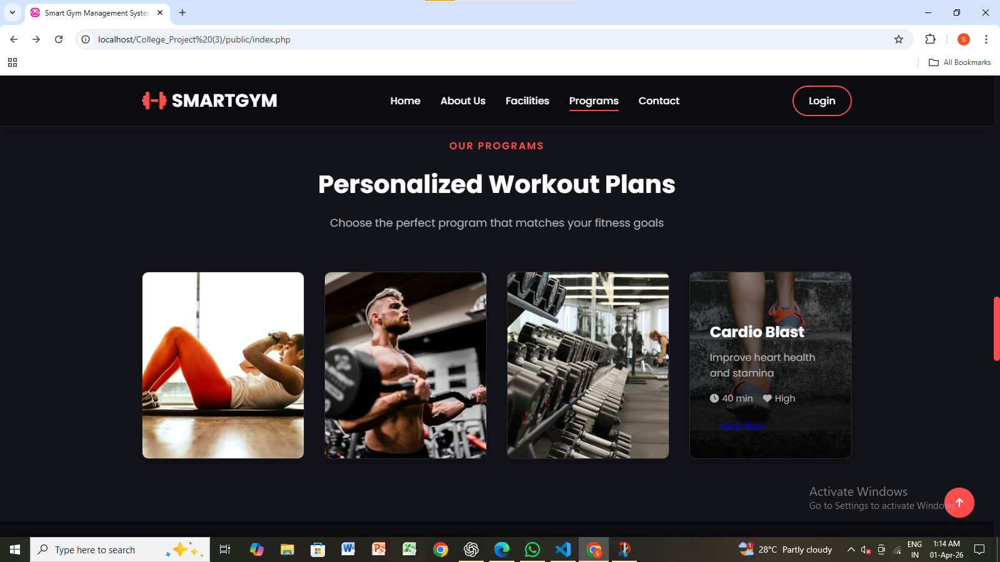
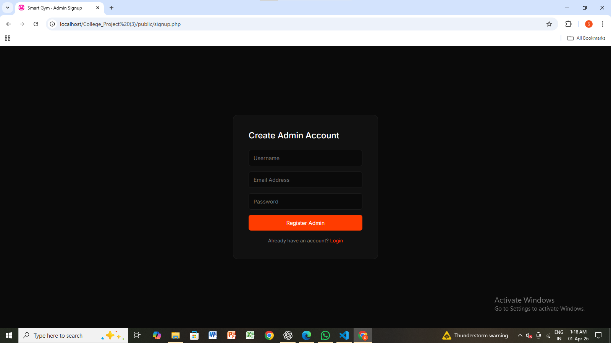
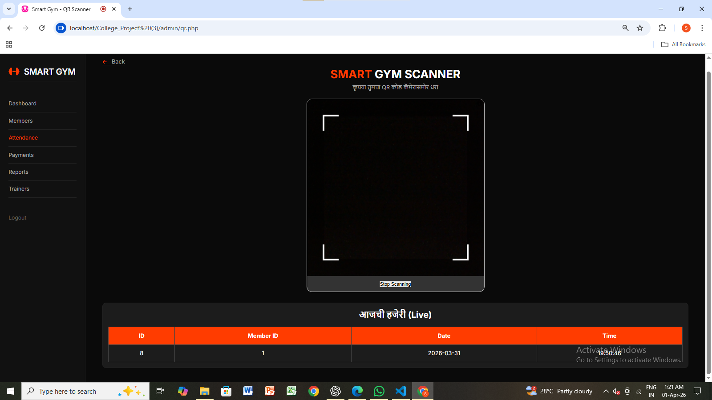
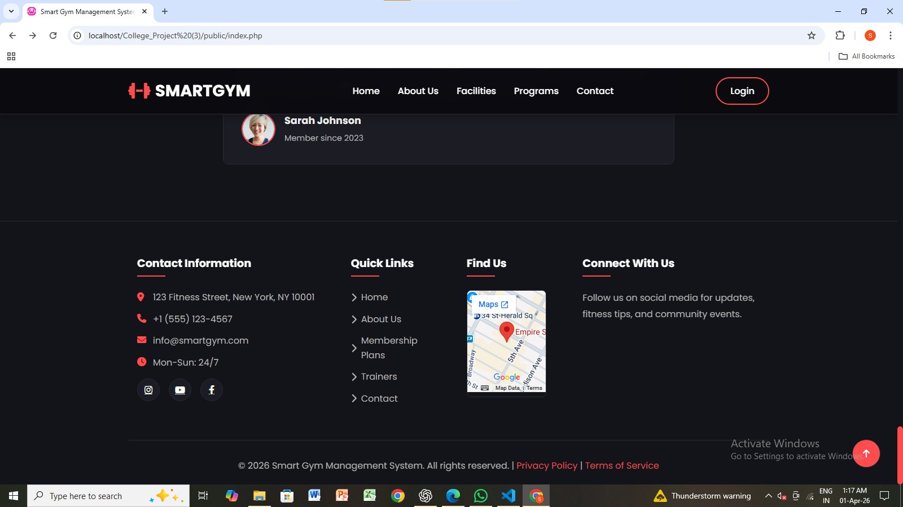
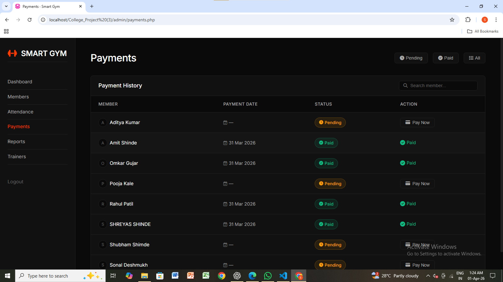
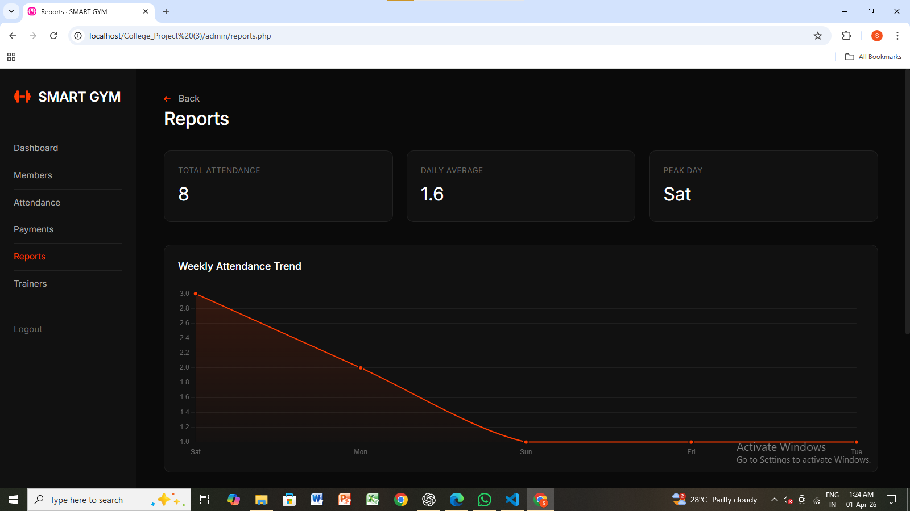
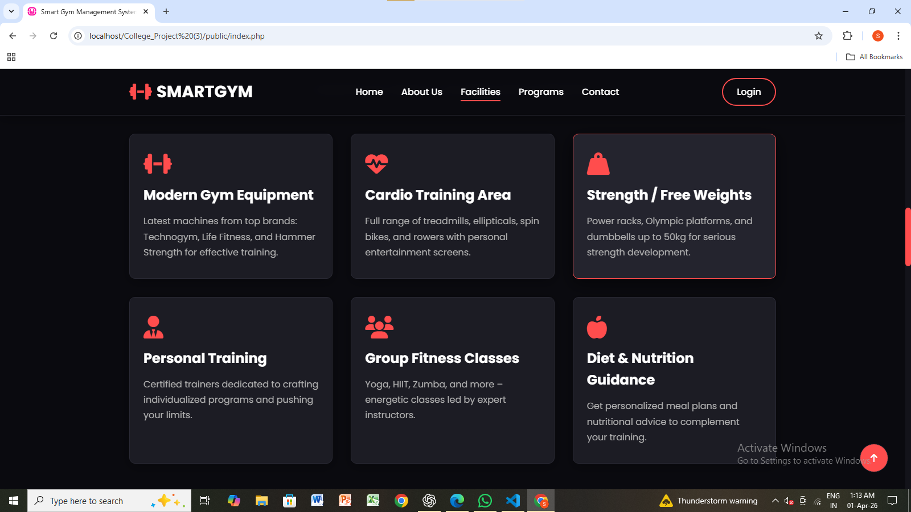
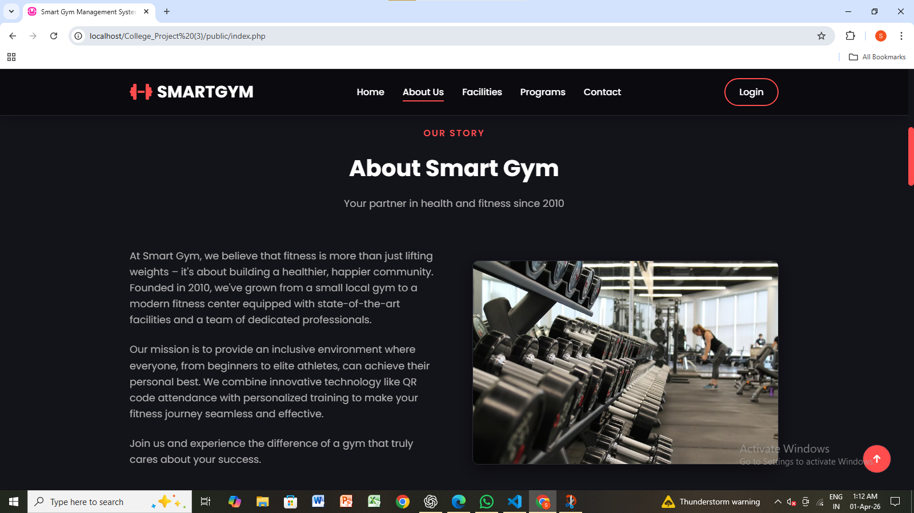
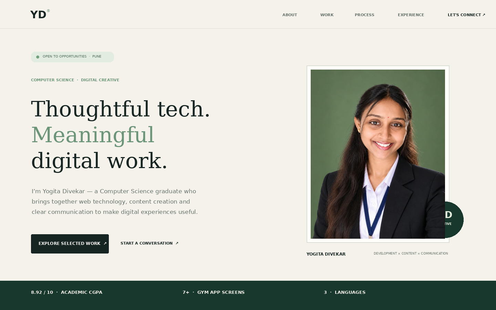

Understand
Clarify the audience, goal and problem before choosing a format or tool.
COMPUTER SCIENCE · DIGITAL CREATIVE
I’m Yogita Divekar — a Computer Science graduate who brings together web technology, content creation and clear communication to make digital experiences more useful and engaging.

01 / THE INTRODUCTION
I work at the intersection of technology and creativity — turning ideas into clear, considered digital experiences.
My background spans web development, social media management, content creation, video editing and IT coordination. I enjoy understanding what people need, organising the moving parts and shaping a useful result — whether that’s a web application, a campaign asset or a smooth event workflow.
02 / SELECTED WORK
A closer look at the problems, thinking and features behind my work.
WEB APPLICATION · PHP / MYSQL
A centralised web application designed to bring everyday gym administration into one organised system.
Gym operations involve multiple tasks — member records, attendance, payments and workout plans. Managing these separately can make information harder to track.
Built a single system with dedicated modules for member registration, QR attendance, fee tracking, workout plans and reporting.
A connected administrative workflow with key gym activities represented in one application, supported by a set of working interface screens.








PERSONAL WEBSITE · HTML / CSS / JS
A responsive personal portfolio created to bring technical projects, creative work and professional experience together in one easy-to-explore place.
01 Clear positioning and a direct contact path
02 Case-study storytelling instead of a plain project list
03 Mobile-first layout with interactive details

VIEW PORTFOLIO PREVIEW ↗EVIDENCE NOTE / METRICS SHOWN ARE LIMITED TO VERIFIED ACADEMIC AND PROJECT DETAILS. NO CLIENT PERFORMANCE FIGURES OR TESTIMONIALS HAVE BEEN INVENTED.
03 / HOW I WORK
A repeatable approach for both technical and creative projects.
Clarify the audience, goal and problem before choosing a format or tool.
Break the work into clear content, features, tasks and priorities.
Build, design or edit with tools such as VS Code, Canva and CapCut.
Review the details, test usability and improve clarity across devices.
TOOLS & WORKFLOW
I use a mix of development and creative tools to plan, produce and refine work. AI tools can support ideation, outlining and first-pass research; final content, code and decisions should always be checked for accuracy and quality.
04 / EXPERIENCE
Professional experience, freelance work and event coordination.
Freelance · Pune
Local Startup
98th Rashtriya Marathi Sahitya Sammelan · New Delhi
05 / CAPABILITIES
06 / EDUCATION
Sarhad College of Arts, Commerce & Science · Pune
07 / YOUR NEXT MOVE
Have a role, project or collaboration in mind? I’d be glad to hear about it.